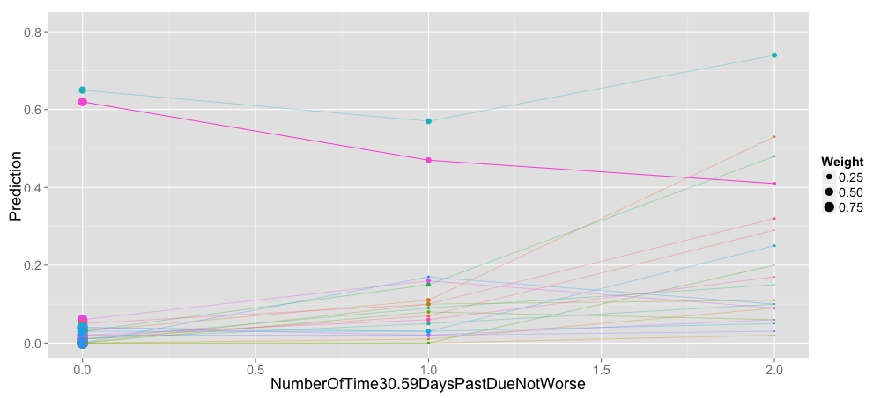

Title
Distinguishing features here:
- treats model as a black box
- tries to properly account for relationships among the inputs of interest
Plan
- Motivating fake example
- Predictive comparisons definitions: what we want
- Applying average predictive comparisons to (1)
- An example with real data: credit scoring
- (Optional) Estimation & Computation: how to get what we want
- (Optional) Comparison with other approaches
- Discussion!
Silly Example
- We sell wine
- Wine varies in: price, quality
- Customers randomly do/don’t buy, depending on price and quality
Logistic Regression
- \(P\): price ($)
- \(Q\): quality (score on arbitrary scale)
- Model: \(P(\text{wine is purchased}) = logit^{-1}(\beta_0 + \beta_1 Q + \beta_2 P)\)
True model: \(P(\text{wine is purchased}) = logit^{-1}(0.1 Q - 0.12 P)\)
We don’t really need a model to understand this…
(for clarity, showing only a discrete subset of prices)
We don’t really need a model to understand this…
For each individual price, quality vs. purchase probability forms a portion of a shifted inverse logit curve:
- how changes in price/quality affect \(P(\text{wine is purchased})\) depends a lot on where you are in input space
- changes in \(logit(P(\text{wine is purchased}))\) don’t depend on where you are in input space
- but you probability care more about probabilities than logits of probabilities
Variation 2
In another possible world, mid-range wines are more common:
- input distribution is changed
- … but model is not changed
Now examples in the range where quality matters are more common
Variation 3
In a third possible world, price varies more strongly with quality:
Again:
- input distribution is changed
- … but model is not changed, still \(P(\text{wine is purchased}) = logit^{-1}(\beta_0 + \beta_1 Q + \beta_2 P)\)
Now quality matters more
… across all price ranges
Now quality matters more
… across all price ranges (for the kinds of variation that we see in the data)
Lessons from this example
- We want to interpret things on the scale we care about (probability in this case)
- Relationships among the inputs matter
Goal is single-number summaries
These concepts are vague, but keep them in mind as we try to formalize things in the next few slides:
For each input, what is the average change in output per unit change in input? (generalizes linear regression, units depend on units for input)
How important is each input in influencing the output? (units should be consistent across inputs – think of standardized regression coefficients)
Some notation
\(u\): the variable under consideration
\(v\): the vector of other variables (the “all else held equal”)
\(f(u,v)\): a function that makes predictions, e.g. maybe \(f(u,v) = \mathcal{E}[y \mid u, v, \theta]\)
- We consider transitions in \(u\) holding \(v\) constant, e.g. \[\frac{f(u_2, v) - f(u_1, v)}{u_2-u_1}\]
- To get one-point summaries we’ll take an average
- All of the subtlety lies in the choice of \(v\), \(u_1\), \(u_2\)
What average do we take?
The APC is defined as
\[\frac{\mathcal{E}[\Delta_f]}{\mathcal{E}[\Delta_u]}\]
where
- \(\Delta_f = f(u_2,v) - f(u_1,v)\)
- \(\Delta_u = u_2 - u_1\)
- \(\mathcal{E}\) is expectation under the following process:
- sample \(v\) from the (marginal) distribution of the corresponding inputs
- sample \(u_1\) and \(u_2\) independently from the distribution of \(u\) conditional on \(v\)
Variations
- “Impact” (my idea, my privisonal term) is just the expected value of \(\Delta_f = f(u_2,v) - f(u_1,v)\)
- Absolute versions use \(\mathcal{E}[|\Delta_f|]\) and \(\mathcal{E}[|\Delta_u|]\)
Computation
- Once we’ve said what we want, computing/estimating it isn’t trivial
- More on this (depending on time/interest)
Returning to the wines…


Exercise for the reader: Make an example where APC is larger than in Variation 1 but “Impact” is much smaller.
Credit Scoring Example
- SeriousDlqin2yrs (target variable): Person experienced 90 days past due delinquency or worse
- RevolvingUtilizationOfUnsecuredLines: Total balance on credit cards and personal lines of credit except real estate and no installment debt like car loans divided by the sum of credit limits
- age: Age of borrower in years
- NumberOfTime30-59DaysPastDueNotWorse: Number of times borrower has been 30-59 days past due but no worse in the last 2 years.
- NumberOfTime60-89DaysPastDueNotWorse: Number of times borrower has been 60-89 days past due but no worse in the last 2 years.
- NumberOfTimes90DaysLate: Number of times borrower has been 90 days or more past due.
- DebtRatio: Monthly debt payments, alimony,living costs divided by monthy gross income
- MonthlyIncome: Monthly income
- NumberOfOpenCreditLinesAndLoans: Number of Open loans (installment like car loan or mortgage) and Lines of credit (e.g. credit cards)
- NumberRealEstateLoansOrLines: Number of mortgage and real estate loans including home equity lines of credit
- NumberOfDependents: Number of dependents in family excluding themselves (spouse, children etc.)
Model Building
We’ll use a random forest for this example:
set.seed(1)
# Turning the response to type 'factor' causes the RF to be build for
# classification:
credit$SeriousDlqin2yrs <- factor(credit$SeriousDlqin2yrs)
rfFit <- randomForest(SeriousDlqin2yrs ~ ., data = credit, ntree = ntree)
Aggregate Predictive Comparisons
set.seed(1)
apcDF <- GetPredCompsDF(rfFit, credit, numForTransitionStart = numForTransitionStart,
numForTransitionEnd = numForTransitionEnd, onlyIncludeNearestN = onlyIncludeNearestN)
## |Input | Apc.Signed| Apc.Absolute| Impact.Signed| Impact.Absolute|
## |:-------------------------------------|-----------:|-------------:|--------------:|----------------:|
## |RevolvingUtilizationOfUnsecuredLines | 8.265e-02| 1.590e-01| 0.024470| 0.04707|
## |age | -3.263e-04| 2.496e-03| -0.004750| 0.03633|
## |NumberOfTime30.59DaysPastDueNotWorse | 3.873e-02| 7.057e-02| 0.014864| 0.02708|
## |DebtRatio | 8.705e-03| 1.888e-01| 0.001614| 0.03500|
## |MonthlyIncome | 3.270e-07| 9.794e-06| 0.001104| 0.03307|
## |NumberOfOpenCreditLinesAndLoans | 1.634e-03| 7.746e-03| 0.007147| 0.03387|
## |NumberOfTimes90DaysLate | 1.511e-01| 1.889e-01| 0.021397| 0.02676|
## |NumberRealEstateLoansOrLines | 2.855e-03| 2.294e-02| 0.002085| 0.01675|
## |NumberOfTime60.89DaysPastDueNotWorse | 9.203e-02| 1.853e-01| 0.007781| 0.01567|
## |NumberOfDependents | 4.221e-03| 1.849e-02| 0.004173| 0.01828|
Sensitivity: Age
Sensitivity: Number of Time 30-35 Days Past Due
Mostly we see the increasing probability that we’d expect…
Sensitivity: Number of Time 30-35 Days Past Due
… but in one case, probability of default decreases with the 0-to-1 transition

Can we explain it?
## | RevolvingUtilizationOfUnsecuredLines| age| DebtRatio| MonthlyIncome| NumberOfOpenCreditLinesAndLoans|
## |-------------------------------------:|----:|----------:|--------------:|--------------------------------:|
## | 1| 27| 0.1543| 4800| 4|
## | NumberOfTimes90DaysLate| NumberRealEstateLoansOrLines| NumberOfTime60.89DaysPastDueNotWorse|
## |------------------------:|-----------------------------:|-------------------------------------:|
## | 1| 0| 0|
## | NumberOfDependents| NumberOfTime30.59DaysPastDueNotWorse|
## |-------------------:|-------------------------------------:|
## | 0| 0|
A Cruder Approach
(This is the approach linked in one of the group’s FB threads)
- (by default) determine a 6 representative values for “all else” according to percentiles: one for minimum of each, one for 20th percentile, 40th percentile, etc.
- vary the input of interest, holding “all else” at those values
A Cruder Approach Can Give Wrong Results
\(x_1\), \(x_2\) negatively correlated, $y = x_1x_2x_3*
“Partial Plots”: A somewhat less crude approach
(partial plots)
- this accounts for relationships among the “all else held equal” but not between those and the input under consideration
Comparison with other approaches
Things that vary
- Units - depend on input or consistent across inputs
- Sensitive to univariate distribution of inputs
- Sensitive to dependence between inputs
- Shows shape of non-linearity
- Signed
- Model
- Based on holdout performance
Misc
(Reread paper to add more)
Application to RBM’s might be natural (since they make sampling from conditional distributions easy?)
Interest in particular sized transitions
e.g. “I’m interested in a credit score increase of 10 points”
- what’s the distribution of transition sizes (is 10 points common enough that we actually should care?)
- what’s the distribution of